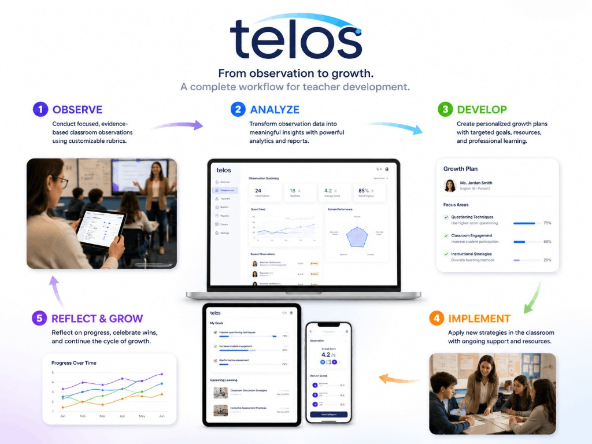
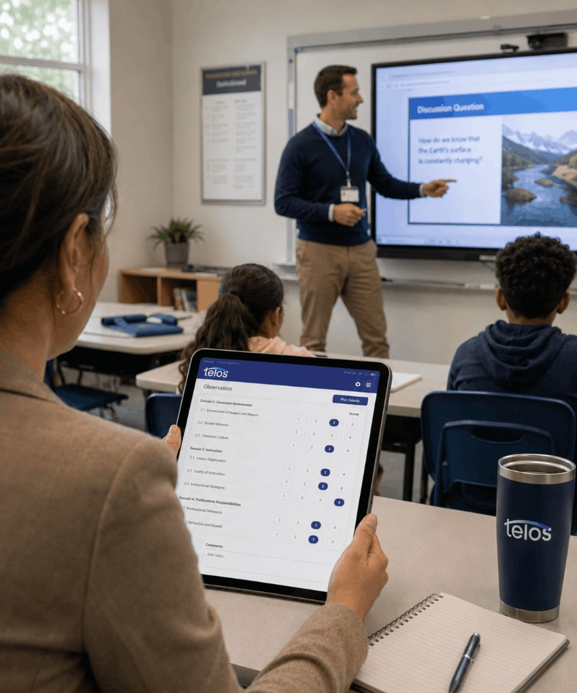
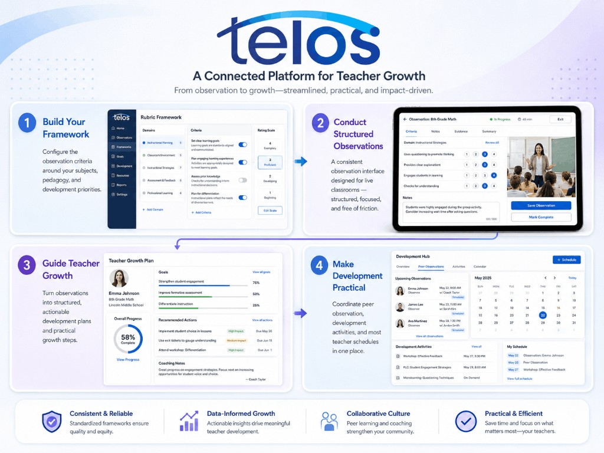

For Teachers
Clear feedback, visible talent development, and personalized growth steps that respect classroom realities — so improvement feels supported, not imposed.
TELOS
TELOS helps schools turn classroom observation into clear, targeted teacher development, and measurable instructional improvement. It connects observation, analysis, professional growth, peer learning, and scheduling in one platform.
Leave your email and we'll show how observation, feedback, and teacher growth work in one platform.
The challenge
Many schools collect observation notes, evaluation forms, and teacher feedback. But these processes are often fragmented, inconsistent, and difficult to turn into meaningful development.

Built for instructional leaders
TELOS is designed for the people responsible for teaching quality across a school.
Observe
Conduct focused, evidence-based observations using customizable rubrics built for meaningful feedback.
Tailor rubrics to your teaching standards and goals.
Record observations quickly on any device.
Provide clear, objective feedback that drives improvement.

Analyze
Powerful analytics help you understand patterns, track progress, and measure impact.
Identify trends and patterns across teachers and classrooms.
Track growth over time with clear visual reports.
Create and share professional reports in just a few clicks.
Develop
Turn insights into personalized action with goals, resources, and professional learning.
Define clear, measurable goals aligned to focus areas.
Access curated strategies, articles, videos, and examples.
Schedule professional learning and track progress.
Collaborate with mentors and peers for continuous growth.
A connected improvement cycle
Four connected steps turn observation data into practical teacher development across your school.
Configure the observation criteria around your subjects, pedagogy, and development priorities.
A consistent observation interface designed for live classrooms — structured, focused, and free of friction.
Turn observations into structured, actionable development plans and practical growth steps.
Coordinate peer observation, development activities, and most teacher schedules in one place.

Everything connected in one platform
Observation, feedback, analytics, and development — unified so leaders can act on insight, not scattered data.
Clear feedback, visible talent development, and personalized growth steps that respect classroom realities — so improvement feels supported, not imposed.
Gain a school-wide view of instructional quality across departments, identify trends, and direct development where it matters most.
Designed around your school
Configure criteria, structures, and roles for your priorities.
Prepare leaders, observers, and teachers to use the platform.
Run an initial cycle with selected teams or departments.
Review early data and refine implementation, then expand across the school.
Discover how TELOS can help your school build a more consistent, transparent, and development-focused approach to teaching quality.
Share your goals — we'll outline a pilot, onboarding path, and rollout for your team.